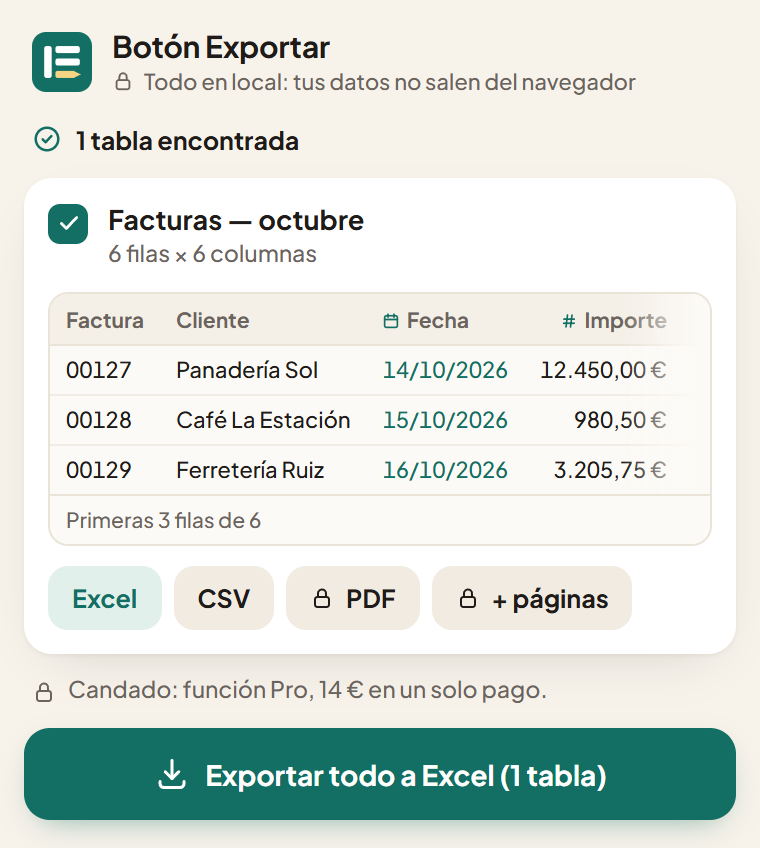

Cualquier tabla de una página web, en un Excel limpio.
Un clic y la tabla se convierte en una hoja de cálculo con la que puedes trabajar: números que se suman, fechas que se ordenan y ceros a la izquierda intactos. Pensada para los programas de gestión web antiguos que no tienen botón Exportar.
Sin cuentaNada sale de tu navegador10 idiomas
Facturas — octubre
| Factura | Cliente | Fecha | Importe | C. P. |
|---|---|---|---|---|
| 00127 | Panadería Sol | 14/10/2026 | 12.450,00 € | 08001 |
| 00128 | Café La Estación | 15/10/2026 | 980,50 € | 28013 |
| 00129 | Ferretería Ruiz | 16/10/2026 | 3.205,75 € | 46001 |
| 00130 | Clínica Dental Mar | 20/10/2026 | 1.140,00 € | 41001 |
| 00131 | Imprenta Ribera | 22/10/2026 | 27.300,00 € | 03001 |
| 00132 | Pastelería Lago | 27/10/2026 | 615,20 € | 01001 |

Copiar y pegar estropea tus datos. Esto no.
Una tabla pegada en Excel parece correcta hasta que intentas usarla. Estas son las cosas que Botón Exportar arregla solo, antes de que el archivo llegue a tus manos.
Los números siguen siendo números
Los importes con símbolo de moneda y separador de miles se convierten en números de verdad, en cualquier formato: 1.234,56 €, $1,234.56, R$ 1.234,56. El separador se deduce de toda la columna.
Las fechas son fechas
14/10/2026, 10/14/2026, Oct 14, 2026: el orden de día y mes se lee de la columna, así que las fechas se ordenan y se filtran como deben.
Los códigos conservan sus ceros
Códigos postales, números de factura, NIF y teléfonos se quedan exactamente como están escritos. Se acabó el 08001 que se convierte en 8001.
Las tablas que otras herramientas no ven
Tablas dentro de iframes, una primera columna fija junto a otras que se desplazan, cabeceras guardadas en una tabla aparte, datos repartidos en muchas páginas. Las encuentra y las vuelve a unir.
Tres pasos, nada que configurar
Fija el icono
Después de instalarla, haz clic en la pieza de puzle arriba a la derecha del navegador y fija Botón Exportar, para tenerlo siempre a un clic.
Abre la página con tu tabla
Un portal de empresa, una pantalla de un ERP antiguo, un informe, una página pública. Haz clic en el icono: aparecen las tablas, y cada una se ilumina en la página al pasar el cursor por encima.
Elige Excel o CSV
El archivo se crea en tu navegador y se descarga, ya con formato y con los filtros activados. Ábrelo y ponte a trabajar.
Los datos de tu oficina se quedan en tu navegador
Botón Exportar lee la tabla y crea el archivo en tu equipo. Sin servidores, sin cuenta, sin rastreo. Por eso también es seguro en los portales internos.
Gratis para el uso diario. Pro es un pago único.
Gratis
0 € para siempre
- Exporta una tabla cada vez a Excel o CSV
- Toda la limpieza automática
- Excel con formato y filtros activados
- Sin límite de filas
Pro
14 € una sola vez, tuyo para siempre
- Todo lo de la versión gratuita
- Une una tabla repartida en muchas páginas, haciendo clic en «Siguiente» por ti
- Exportaciones guardadas que repites con un clic
- Exportación a PDF
- Varias tablas en un solo archivo Excel
Guías
¿Arreglando a mano una tabla pegada? Estas guías explican por qué se estropea y cómo arreglarla, con la extensión o sin ella.
Cómo exportar una tabla de una página web a Excel
Copiar y pegar, la opción «De la Web» de Excel o una extensión: qué resuelve cada una y dónde falla.
Leer la guía →
Por qué Excel quita los ceros a la izquierda y cómo conservarlos
Códigos postales, números de factura y teléfonos que pierden el primer cero o se convierten en 3,49E+10.
Leer la guía →
Números pegados desde una web que Excel guarda como texto
Sumas que dan 0 y 1,250 que se convierte en 1,25: comas, puntos y cómo arreglarlo.
Leer la guía →
Pruébalo con tu propia tabla.
Gratis, sin cuenta y se instala en unos segundos. O pruébalo antes con una tabla de ejemplo.